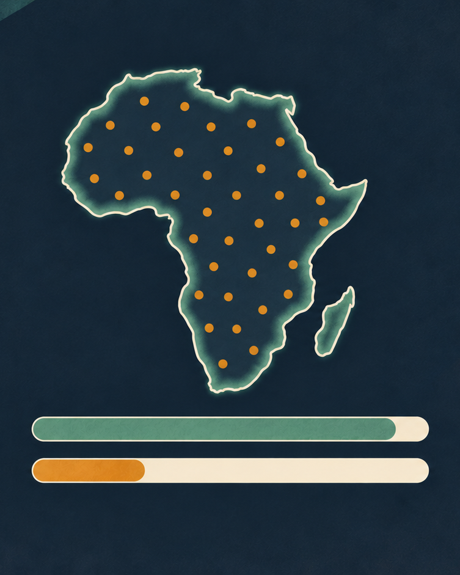
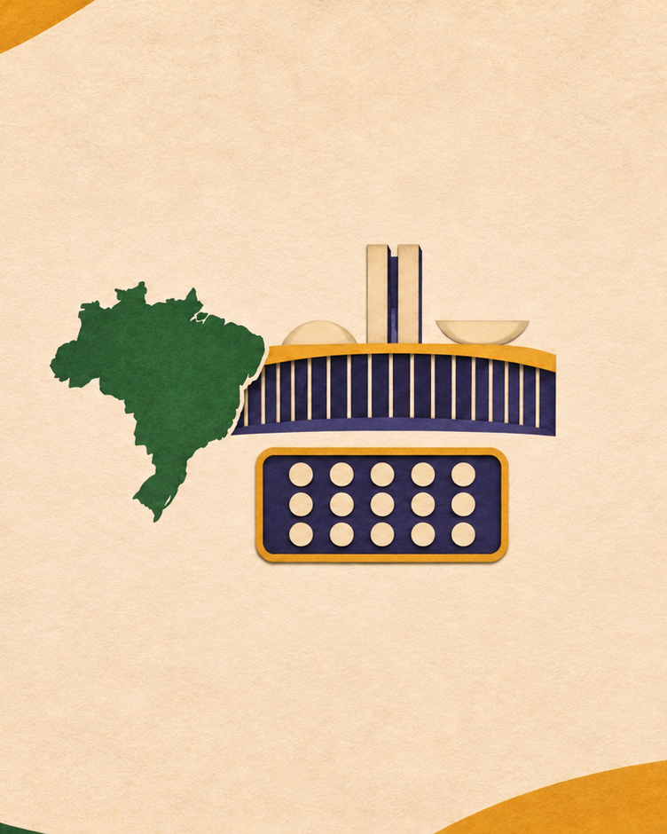

Africa · current data
Coverage is widespread. Use is not.
GSMA reports a large gap between mobile-broadband reach and mobile-internet use across Africa.
Three-story vertical slice for source, image, accessibility and layout review. No feed activation. No production write.
These pages use original paraphrase, direct source links and generated editorial illustrations. Claims remain attributed, maps remain schematic, and unresolved gates remain visible.

GSMA reports a large gap between mobile-broadband reach and mobile-internet use across Africa.

OHCHR documented killings and injuries from armed violence through 31 October 2026.

Agência Brasil reports at least 15 Black women elected as federal deputies in 2026.